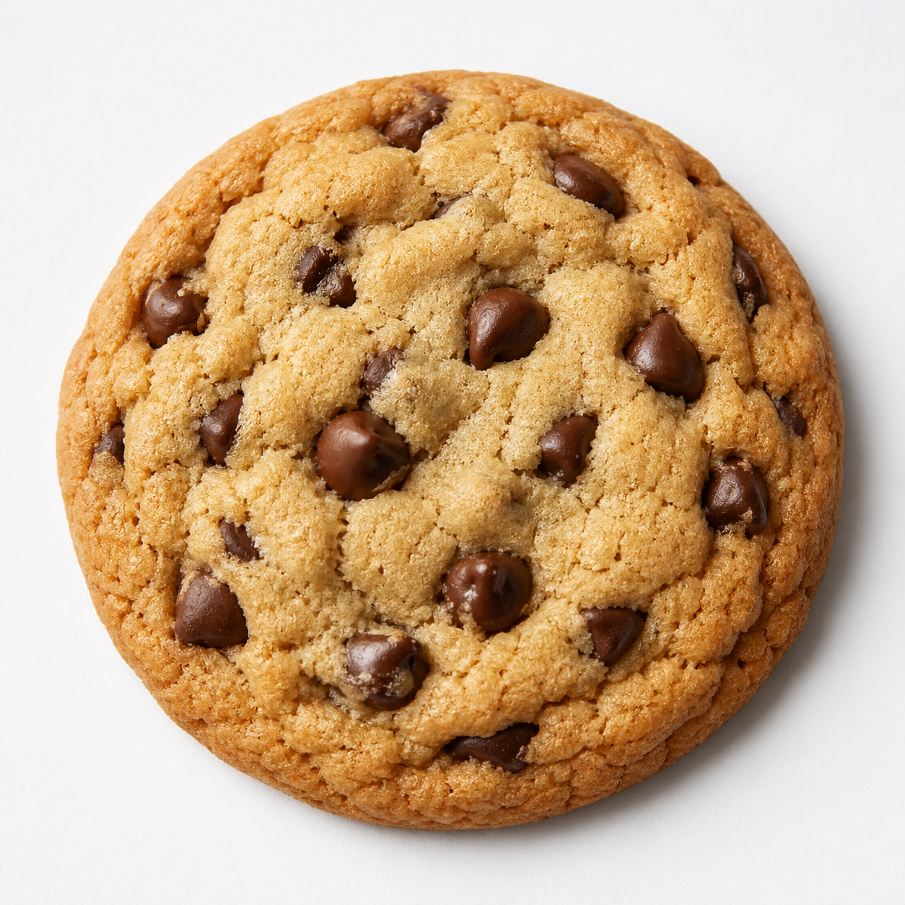

Back to homepage
Chocolate Chip Cookie Recipe

Description
These cookies are quick, easy, and never fail!
The recipe produces soft cookies that everyone always loves and asks about the recipe. It is meant to be a replica of Millie's Cookies.
This recipe makes about 12 cookies.
Ingredients
- 3oz butter
- 3oz granulated sugar
- 3oz muscovado sugar
- Tsp vanilla extract
- 1 egg
- 6oz self raising flour
- Pinch salt
- 4oz of choc chips or raisins or dried apricots or whatever you want to add.
Steps
- Preheat oven to 180 degrees celsius.
- Mix all ingredients together.
- Put spoonfulls on trays covered with baking parchment.
- Cook for 11 minutes.